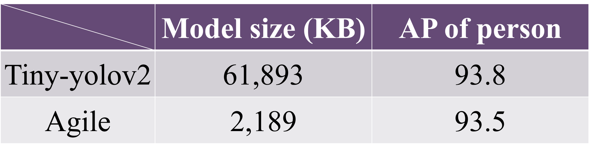
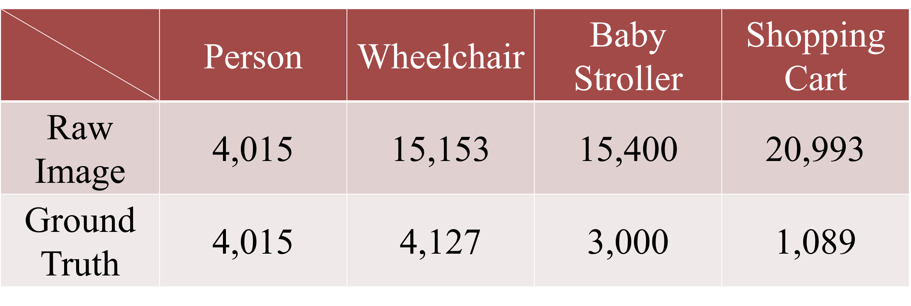
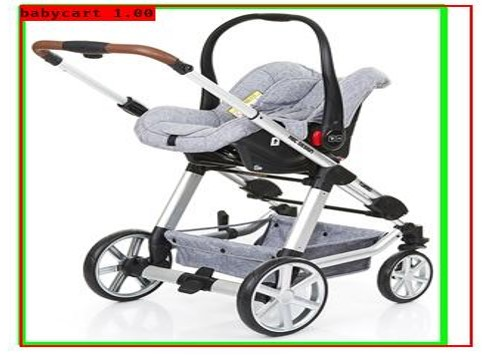
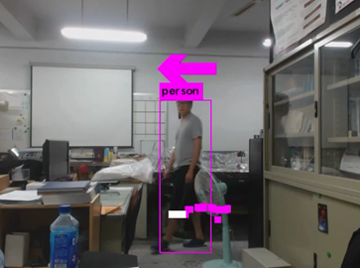
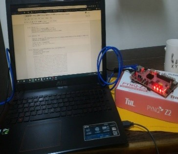
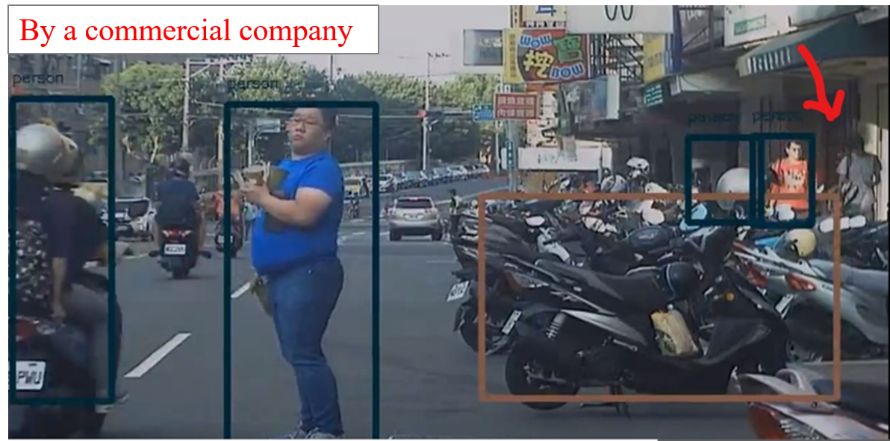
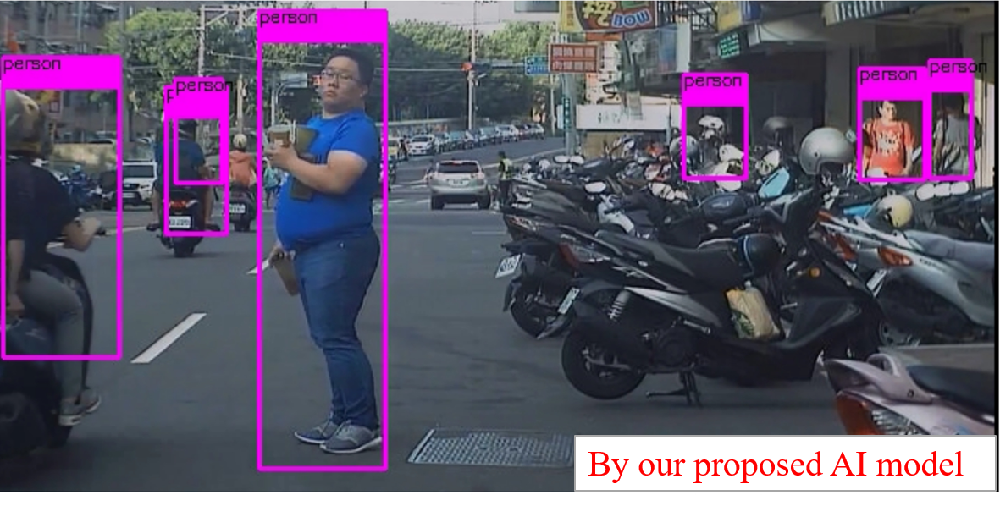
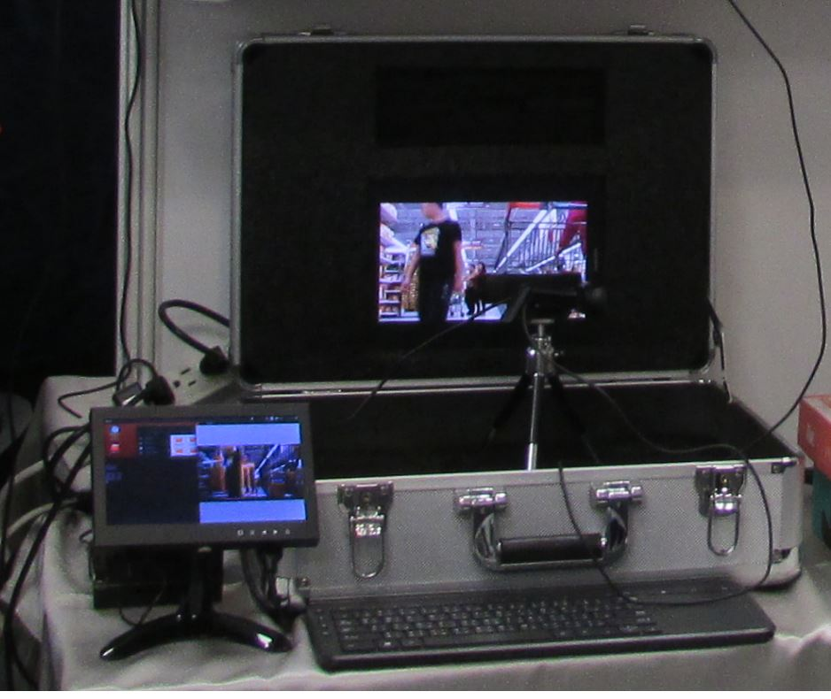

逢甲大學電子工程學系
系統晶片實驗室
研究成果
AI Network Compression
- Agile model: 97.4% model size and real-time performance with resolution HD360 @30 FPS achieved.
- The Average Precision (AP) of detecting person by using the proposed

Training Data Collection
- Re-train the model with our customized datasets containing over 15,000 pictures, including person, wheelchair, baby stroller and shopping cart.

Auto Labelling Tool
- Build a tool which can label ground-truths automatically.
- Use a CNN model to detect the objects and label them.

Predicting Objects’ Paths
- Predict objects’ future paths by their past tracks.


AI Network Implementation on FPGA
- Successfully build a CNN model on the FPGA platform by compressing the model.
- Solve the issue of mapping deep CNN from software algorithm to hardware circuits.
Image Recognition
- Our lab’s model provides better detection compared with the result from commercial company.


物件即時偵測設備

更多實驗成果，如下逢甲系統晶片實驗室youtube頻道
逢甲系統晶片實驗室youtube頻道
Indoor Person Detection with Estimated Distance Prediction and Moving Direction Demonstration